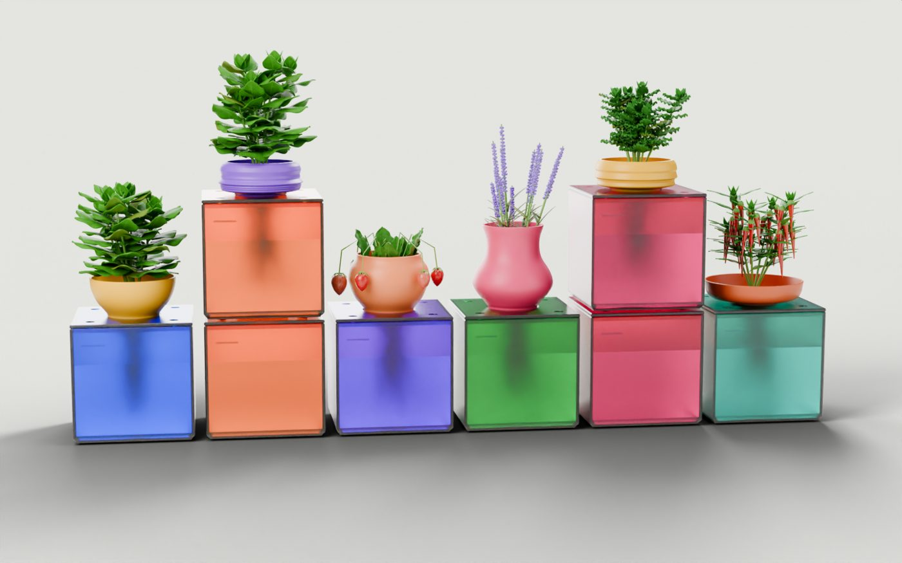
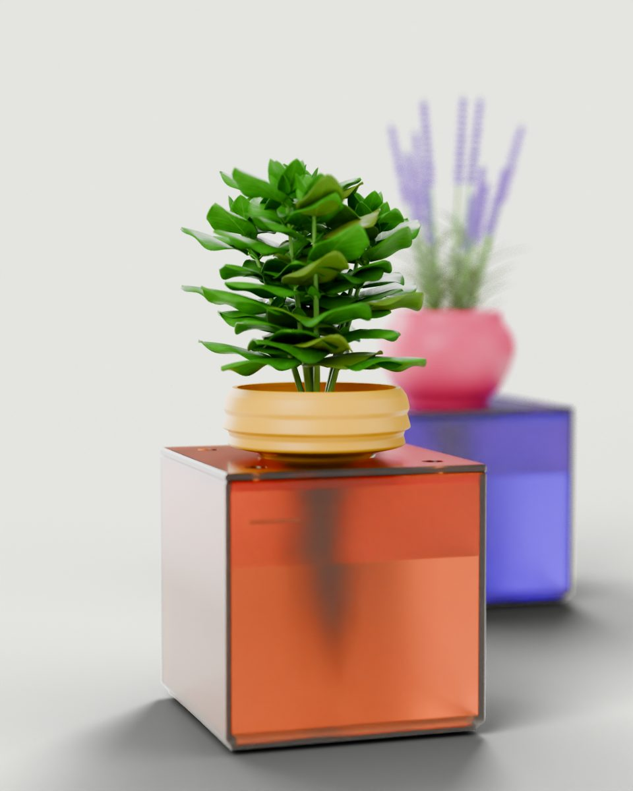
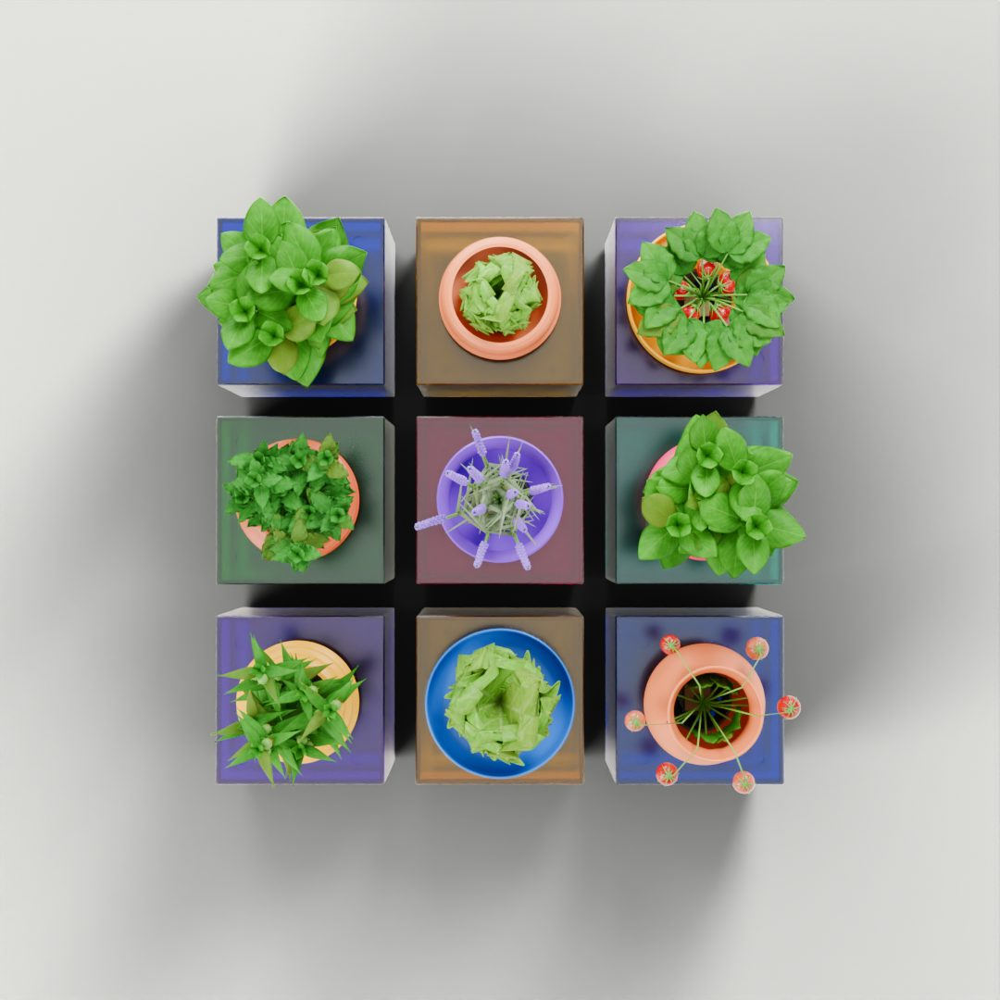

Creaturelle
Un vaso idroponico modulare stampato in 3D in PETG traslucido. Il corpo è un cubo che tiene l'acqua, la testa sopra tiene la pianta, e le radici scendono a bere: attraverso la plastica le vedi crescere.
- Cosa
- Sei parti, niente terra, montate senza colla né attrezzi. Le teste si cambiano a piacere, alcune hanno la forma di un volto, e i corpi si impilano per fare una piccola famiglia sulla mensola.
- Io
- Tutto: l'idea, il modello 3D, le stampe di prova, le foto, i render e uno spot verticale in 4K.
- Strumenti
- Blender, modellazione parametrica, stampa 3D


